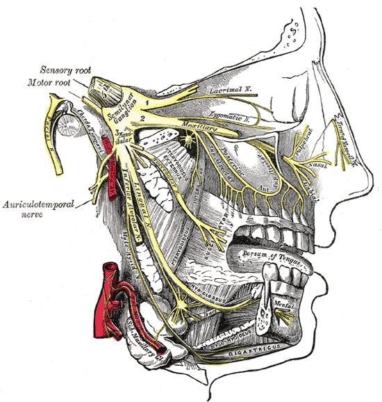

General information only. It does not replace advice from a health professional. For sudden neurological symptoms, call emergency services.


What it is
Cluster headache is one of the most intense pains known. It causes attacks of extreme pain around one eye or in the temple, always on the same side, lasting 15 minutes to 3 hours and recurring one to eight times a day, often at the same time, frequently at night. The attacks come in seasons or "clusters" of weeks or months, separated by months or years without pain. It affects about 1 in 1,000 people, more men than women, and usually starts between the ages of 20 and 40.
Symptoms
- Boring pain, "like a red-hot poker in the eye".
- On the same side as the pain: a red, watering eye, drooping eyelid, small pupil, blocked or runny nose, sweating of the forehead.
- Restlessness: unlike migraine, the person cannot keep still; they pace, rock or hit their head.
- During a cluster, alcohol triggers attacks within minutes.
Many people take years to be diagnosed: it is sometimes mistaken for sinusitis, a dental problem or migraine.
Types
- Episodic (85-90%): periods of attacks lasting weeks or months, with remissions of at least three months.
- Chronic: attacks for a year or more without remission, or with remissions shorter than three months.
Cause
It is linked to the hypothalamus, the brain's "clock", which explains its daily and seasonal rhythm, and to activation of the trigeminal-autonomic system. Smoking is very common among patients, although stopping does not always improve the condition.
Diagnosis
It is clinical. A brain MRI is usually done at least once to rule out lesions near the pituitary gland or cavernous sinus that can mimic it.
Treatment
For an attack (it must work within minutes):
- 100% oxygen through a mask at high flow (12-15 litres per minute) for 15 minutes. It works in most people and has no side effects.
- Sumatriptan injected under the skin, or nasal zolmitriptan or sumatriptan.
- Painkillers by mouth do not work: they act too slowly.
Bridging, at the start of a cluster, while the preventive takes effect: oral corticosteroids for a few days or a greater occipital nerve block with anaesthetic and corticosteroid.
Preventive throughout the cluster:
- Verapamil, the first choice, with electrocardiogram checks.
- Lithium, topiramate or melatonin as alternatives.
- Galcanezumab, an anti-CGRP antibody, in the episodic form.
- In resistant chronic forms: non-invasive vagus nerve stimulation, sphenopalatine ganglion stimulation or occipital nerve stimulation.
See migraine treatments for the shared medicines.
Living with cluster headache
During a cluster it is best to avoid alcohol and naps, keep regular hours and have oxygen available at home. The pain is so intense that it can cause a lot of anticipatory anxiety and depression: psychological support and patient associations help.
Sources
- May A, et al. Cluster headache. Nat Rev Dis Primers. 2018;4:18006.
- Headache Classification Committee of the IHS. ICHD-3. Cephalalgia. 2018;38:1-211.
- May A, et al. EFNS guidelines on the treatment of cluster headache and other trigeminal-autonomic cephalalgias. Eur J Neurol. 2006;13:1066-77.
- Goadsby PJ, et al. Trial of galcanezumab in prevention of episodic cluster headache. N Engl J Med. 2019;381:132-41.